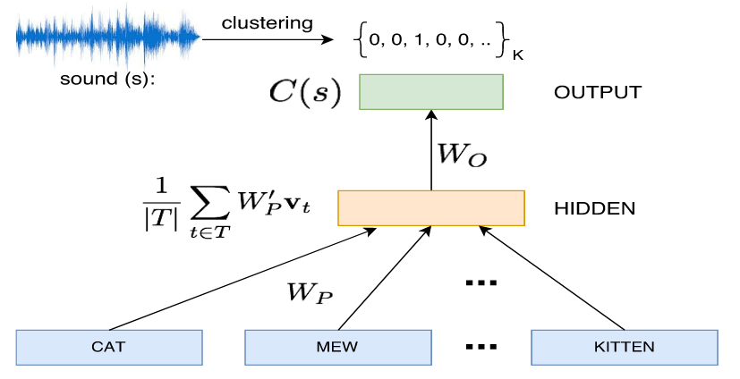

Word embeddings with sound
I came across this article called Sound-Word2Vec:Learning Word Representations Grounded in Sounds1, which caught my attention as it aims at creating word embeddings in an original way, using voiced sounds of words.
What is embedding
Embedding in Machine Learning refers to a method for capturing the information of an input data into a dense representation. This way, we obtain an embedding space, which should have interesting properties like being friendly to vector arithmetics, which is not the case of original raw data.
For example, one-hot encoding is somewhat a poor embedding method, as it encodes data into a sparse vector space, and interpolation will not work as expected. What I mean by "as expected" is, we would prefer our embedding space to relate distances between vectors to something interpretable, such as semantics (synonyms, antonyms, etc). For this, Word2Vec performs quite well.
What is the point of using sound ?
Human language can be written and spoken. Embeddings grounded in sounds capture dependancies between words and onomatopeia. It is important to give machines an insight on sound dependancies of words, therefore bridging the gap between natural language and speech.
In the research paper, sounds are clustered using various audio features, with K-means clustering. This is then considered as the target of the learning phase for the model.
Sound-Word2Vec model
The model is similar to Word2Vec. A hidden layer is a fully-connected layer with softmax activation.  The task is simply to predict the sound cluster a given input word falls into. A Word2Vec pretrained model is used to take advantage of semantic information already contained in such embeddings. This is relatable to the technique of Transfer Learning, where the model is adapted to a new context, for performing better at sound-related tasks. Indeed, the model is therefore tested on three sound-related tasks:
- Text-based sound retrieval
-
given a textual description, find a corresponding sound in the database
- Foley sound discovery
-
Given an outline of describing the technique for producing a sound, find relevant words suitable for producing the same sound
- Aurally relevant relatedness
-
Sound data
Sound data was retrieved from freesound.org, a website collecting sounds uploaded by users. This represents a huge database of various tagged sounds with descriptions.
Nearest neighbors are sound-related
The following table from the original paper show how such embeddings differ from Word2Vec's embeddings, which are semantically related. apple is associated with bite, chew, munch, instead of fruit, pears.

Recall results on Text-based sound retrieval task are registered on the following table.

Final words
Embeddings are crucial in connectionist view of Machine Learning, as they present input information in a suitable form for subsequent task to perform. I can think of such embeddings being used for lyrics generation, speech recognition, or sentiment analysis. The goal of course is to get put as much information as you can in your embedding, so I believe bridging two fields like sound and natural language is the way to go if we want to obtain rich embeddings.
Footnotes
Sound-Word2Vec:Learning Word Representations Grounded in Sounds, A. Vijayakumar, R Vedantam, D. Parikh, EMNLP conference 2017.